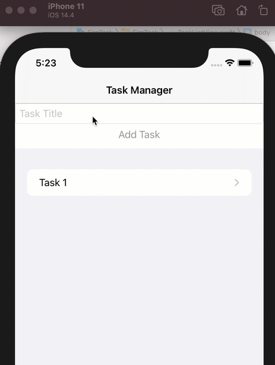

SwiftUI v.s. Firebase
Table of Contents
- 1. Introduction
- 2. Firebase database
- 3. Cloud Firestore Data model
- 4. Create your own Cloud Firestore database
- 5. Adding Firebase to your iOS project
- 6. Basic operations to Firebase with iOS
- 7. Get data from Cloud: UI with Firebase [MVVM]
- 8. Add, Delete #1 data from Cloud: UI with Firebase [MVVM]
- 9. Delete #2 data from Cloud: UI with Firebase [MVVM]
- 10. Detail/Edit data from Cloud: UI with Firebase [MVVM]
- 11. Add Icon to App
- 12. Storage
- 13. Learning resources
1 Introduction
什麼是Firebase？Firebase是由Google收購的子公司，所提供的是行動應用程式開發的平台服務，也就是BaaS(Backend as a Service)，它能夠幫助我們快速開發我們的應用程式，並且支援跨平台包括Android、iOS以及Web，幫我們整合大部分建立一個服務所需要的後台功能。主要像是提供雲端給使用者架起網頁、提供資料庫供使用者存取資料以及做後台分析等等。1
Firebase can power your app’s backend, including data storage, user authentication, static hosting, and more. With Firebase, you can easily build mobile and web apps that scale from one user to one million.
1.1 A Brief History2
Back in 2011, before Firebase was Firebase, it was a startup called Envolve. As Envolve, it provided developers with an API that enabled the integration of online chat functionality into their website.
What’s interesting is that people used Envolve to pass application data that was more than just chat messages. Developers were using Envolve to sync application data such as a game state in real time across their users.
This led the founders of Envolve, James Tamplin and Andrew Lee, to separate the chat system and the real-time architecture. In April 2012, Firebase was created as a separate company that provided Backend-as-a-Service with real-time functionality.
After it was acquired by Google in 2014, Firebase rapidly evolved into the multifunctional behemoth of a mobile and web platform that it is today.
1.2 With Firebase you can2
Firebase helps mobile app teams succeed. With Firebase you can:
- Build better apps
- Improve app quality
- Grow your business
1.2.1 Build better apps
Firebase lets you build more powerful, secure and scalable apps, using world-class infrastructure using:
- Cloud Firestore: is a flexible, scalable database for mobile, web, and server development from Firebase and Google Cloud Platform. It is a NoSQL document database that lets you easily store, sync, and query data for your mobile and web apps — at a global scale.It’s supporting for Android, iOS and Web Platform.
- ML Kit: is a mobile SDK that brings Google’s machine learning expertise to Android and iOS apps in a powerful yet easy-to-use package. Whether you’re new or experienced in machine learning, you can implement the functionality you need in just a few lines of code. There’s no need to have deep knowledge of neural networks or model optimization to get started. On the other hand, if you are an experienced ML developer, ML Kit provides convenient APIs that help you use your custom TensorFlow Lite models in your mobile apps. It’s supporting for Android and iOS Platform.
- Cloud Functions: for Firebase lets you automatically run backend code in response to events triggered by Firebase features and HTTPS requests. Your code is stored in Google’s cloud and runs in a managed environment. There’s no need to manage and scale your own servers. It’s supporting for Android, iOS, C++, Unity and Web Platform.
- Authentication: provides backend services, easy-to-use SDKs, and ready-made UI libraries to authenticate users to your app. It supports authentication using passwords, phone numbers, popular federated identity providers like Google, Facebook and Twitter, and more. It’s supporting for Android, iOS and Web Platform.
- Hosting: is production-grade web content hosting for developers. With a single command, you can quickly deploy web apps and serve both static and dynamic content to a global CDN (content delivery network). You can also pair Firebase Hosting with Cloud Functions to build and host microservices on Firebase. It’s supporting only Web Platform.
- Cloud Storages: is for object storage service built for Google scale. The Firebase SDKs for Cloud Storage add Google security to file uploads and downloads for your Firebase apps, regardless of network quality. You can use our SDKs to store images, audio, video, or other user-generated content. On the server, you can use Google Cloud Storage, to access the same files. It’s supporting for Android, iOS, C++, Unity and Web Platform.
- Real-time Database: is a cloud-hosted NoSQL database that lets you store and sync between your users in real-time. The Real-time Database is really just one big JSON object that the developers can manage in real-time. It’s supporting for Android, iOS, C++, Unity and Web Platform.
1.2.2 Improve app quality
Firebase gives you insights into app performance and stability, so you can channel your resources effectively using:
- Crashlytics: is a lightweight, real-time crash reporter that helps you track, prioritize, and fix stability issues that erode your app quality. Crashlytics saves you troubleshooting time by intelligently grouping crashes and highlighting the circumstances that lead up to them. It’s supporting for Android and iOS Platform.
- Performance Monitoring: is a service that helps you to gain insight into the performance characteristics of your iOS and Android apps. You use the Performance Monitoring SDK to collect performance data from your app, and then review and analyze that data in the Firebase console. Performance Monitoring helps you to understand where and when the performance of your app can be improved so that you can use that information to fix performance issues. It’s supporting for Android and iOS Platform.
- Test Labs: is a cloud-based app-testing infrastructure. It provides a large number of mobile test devices to help you test your apps. It’s supporting for Android and iOS Platform.
1.2.3 Grow your business
Firebase helps you grow to millions of users, simplifying user engagement and retention using:
- In-App Messaging: helps you engage users who are actively using your app by sending them targeted and contextual messages that nudge them to complete key in-app actions — like beating a game level, buying an item, or subscribing to content. It’s supporting for Android and iOS Platform.
- Google Analytics: for Firebase is a free app measurement solution that provides insight on app usage and user engagement. At the heart of Firebase is Google Analytics for Firebase, a free and unlimited analytics solution. Analytics integrates across Firebase features and provides you with unlimited reporting for up to 500 distinct events that you can define using the Firebase SDK. Analytics reports help you understand clearly how your users behave, which enables you to make informed decisions regarding app marketing and performance optimizations. It’s supporting for Android, iOS, C++ and Unity Platform.
- Predictions: applies machine learning to your analytics data to create dynamic user segments based on the predicted behavior of users in your app. These predictions are automatically available for use with Firebase Remote Config, the Notifications composer, Firebase In-App Messaging, and A/B Testing. You can also link your app’s Predictions data to BigQuery so you can get daily exports that you can further analyze or push to third party tools. It’s supporting for Android, iOS, C++ and Unity Platform.
- A/B Testing: helps you optimize your app experience by making it easy to run, analyze, and scale product and marketing experiments. It gives you the power to test changes to your app’s UI, features, or engagement campaigns to see if they actually move the needle on your key metrics (like revenue and retention) before you roll them out widely. It’s supporting for Android, iOS, C++ and Unity Platform.
- Cloud Messaging(FCM): provides a reliable and battery-efficient connection between your server and devices that allows you to deliver and receive messages and notifications on iOS, Android, and the web at no cost.
- Remote Config: essentially allows us to publish updates to our users immediately. Whether we wish to change the color scheme for a screen, the layout for a particular section in our app or show promotional/seasonal options — this is completely doable using the server side parameters without the need to publish a new version. It’s supporting for Android, iOS, C++ and Unity Platform.
- Dynamic Links: With Dynamic Links, your users get the best available experience for the platform they open your link on. If a user opens a Dynamic Link on iOS or Android, they can be taken directly to the linked content in your native app. If a user opens the same Dynamic Link in a desktop browser, they can be taken to the equivalent content on your website. It’s supporting for Android, iOS, Web, C++ and Unity Platform.
- App Indexing: gets your app into Google Search. If users have your app installed, they can launch your app and go directly to the content they’re searching for. App Indexing reengages your app users by helping them find both public and personal content right on their device, even offering query autocompletion to help them more quickly find what they need. If users don’t yet have your app, relevant queries trigger an install card for your app in Search results. It’s supporting for Android and iOS Platform.
2 Firebase database
Firebase offers two cloud-based, client-accessible database solutions that support realtime data syncing:
- Cloud Firestore is Firebase’s newest database for mobile app development. It builds on the successes of the Realtime Database with a new, more intuitive data model. Cloud Firestore also features richer, faster queries and scales further than the Realtime Database.
- Realtime Database is Firebase’s original database. It’s an efficient, low-latency solution for mobile apps that require synced states across clients in realtime.
2.1 Data model
Both Realtime Database and Cloud Firestore are NoSQL Databases3.
| Realtime Database | Cloud Firestore |
|---|---|
| Stores data as one large JSON tree. | Stores data as collections of documents. |
| - Simple data is very easy to store. | - Simple data is easy to store in documents, which are very similar to JSON. |
| - Complex, hierarchical data is harder to organize at scale. | - Complex, hierarchical data is easier to organize at scale, using subcollections within documents. |
| - Requires less denormalization and data flattening. |
3 Cloud Firestore Data model
Cloud Firestore is a NoSQL, document-oriented database. Unlike a SQL database, there are no tables or rows. Instead, you store data in documents, which are organized into collections.
Each document contains a set of key-value pairs. Cloud Firestore is optimized for storing large collections of small documents.
All documents must be stored in collections. Documents can contain subcollections and nested objects, both of which can include primitive fields like strings or complex objects like lists.
Collections and documents are created implicitly in Cloud Firestore. Simply assign data to a document within a collection. If either the collection or document does not exist, Cloud Firestore creates it.
3.1 Documents
In Cloud Firestore, the unit of storage is the document. A document is a lightweight record that contains fields, which map to values. Each document is identified by a name.
A document representing a user alovelace might look like this:
first : "Ada" last : "Lovelace" born : 1815
Complex, nested objects in a document are called maps. For example, you could structure the user’s name from the example above with a map, like this:
name :
first : "Ada"
last : "Lovelace"
born : 1815
You may notice that documents look a lot like JSON. In fact, they basically are. There are some differences (for example, documents support extra data types and are limited in size to 1 MB), but in general, you can treat documents as lightweight JSON records.
3.2 Collections
Documents live in collections, which are simply containers for documents.
 For example, you could have a users collection to contain your various users, each represented by a document:
For example, you could have a users collection to contain your various users, each represented by a document:
collections_bookmark users
alovelace
first : "Ada"
last : "Lovelace"
born : 1815
aturing
first : "Alan"
last : "Turing"
born : 1912
Cloud Firestore is schemaless, so you have complete freedom over what fields you put in each document and what data types you store in those fields. Documents within the same collection can all contain different fields or store different types of data in those fields. However, it’s a good idea to use the same fields and data types across multiple documents, so that you can query the documents more easily.
A collection contains documents and nothing else. It can’t directly contain raw fields with values, and it can’t contain other collections. (See Hierarchical Data for an explanation of how to structure more complex data in Cloud Firestore.)
The names of documents within a collection are unique. You can provide your own keys, such as user IDs, or you can let Cloud Firestore create random IDs for you automatically.
You do not need to “create” or “delete” collections. After you create the first document in a collection, the collection exists. If you delete all of the documents in a collection, it no longer exists.
3.3 References
Every document in Cloud Firestore is uniquely identified by its location within the database. The previous example showed a document alovelace within the collection users. To refer to this location in your code, you can create a reference to it.
1: let alovelaceDocumentRef = db.collection("users").document("alovelace")
A reference is a lightweight object that just points to a location in your database. You can create a reference whether or not data exists there, and creating a reference does not perform any network operations.
You can also create references to collections:
1: let usersCollectionRef = db.collection("users")
3.4 Supported data types
| Data type | Sort order | Notes |
|---|---|---|
| Array | By element values | An array cannot contain another array value as one of its elements. |
| Boolean | false < true | |
| Bytes | Byte order | Up to 1,048,487 bytes (1 MiB - 89 bytes). Only the first 1,500 bytes are considered by queries. |
| Data and time | Chronological | When stored in Cloud Firestore, precise only to microseconds; any additional precision is rounded down. |
| Floating-point-number | Numeric | 64-bit double precision, IEEE 754. |
| Geographical point | By latitude, then longitude | |
| Integer | Numeric | 64-bit, signed |
| Map | By keys, then by value | Key ordering is always sorted. For example, if you write {c: “foo”, a: “bar”, b: “qux”} the map is sorted by key and saved as {a: “bar”, b: “qux”, c: “foo”}. |
| Null | None | |
| Reference | By path elements (collection, document ID, collection, document ID…) | For example, projects/[PROJECT_ID]/databases/[DATABASE_ID]/documents/[DOCUMENT_PATH]. |
| Text string | UTF-8 encoded byte order | Up to 1,048,487 bytes (1 MiB - 89 bytes). Only the first 1,500 bytes of the UTF-8 representation are considered by queries. |
3.5 Index types in Cloud Firestore
Indexes are an important factor in the performance of a database. Much like the index of a book which maps topics in a book to page numbers, a database index maps the items in a database to their locations in the database. When you send a database a query, the database can use an index to quickly look up the locations of the items you requested.
This page describes the two types of indexes that Cloud Firestore uses, single-field indexes and composite indexes.
3.5.1 An index behind every query
If no index exists for a query, most databases crawl through their contents item by item, a slow process that slows down even more as the database grows. Cloud Firestore guarantees high query performance by using indexes for all queries. As a result, query performance depends on the size of the result set and not on the number of items in the database.
3.5.2 Less index management, more app development
Cloud Firestore includes features that reduce the amount of time you need to spend managing indexes. The indexes required for the most basic queries are automatically created for you. As you use and test your app, Cloud Firestore helps you identify and create additional indexes your app requires.
3.5.3 Automatic indexing
By default, Cloud Firestore automatically maintains single-field indexes for each field in a document and each subfield in a map. Cloud Firestore uses the following default settings for single-field indexes:
- For each non-array and non-map field, Cloud Firestore defines two collection-scope single-field indexes, one in ascending mode and one in descending mode.
- For each map field, Cloud Firestore creates one collection-scope ascending index and one descending index for each non-array and non-map subfield in the map.
- For each array field in a document, Cloud Firestore creates and maintains a collection-scope array-contains index.
- Single-field indexes with collection group scope are not maintained by default.
4 Create your own Cloud Firestore database
- Sign in https://firebase.google.com
- Click Get started
- Two mode of Firebase web navigation
- console
- docs: 讀doc破萬卷、寫code如有神
- Create project
- Create a Cloud Firestore database
- If you haven’t already, create a Firebase project: In the Firebase console, click Add project, then follow the on-screen instructions to create a Firebase project or to add Firebase services to an existing GCP project.
- Navigate to the Cloud Firestore section of the Firebase console. You’ll be prompted to select an existing Firebase project. Follow the database creation workflow.
- Select a starting mode for your Cloud Firestore Security Rules:
Locked mode Denies all reads and writes from mobile and web clients. Your authenticated application servers (C#, Go, Java, Node.js, PHP, Python, or Ruby) can still access your database.
1: rules_version = '2'; 2: service cloud.firestore { 3: match /databases/{database}/documents { 4: match /{document=**} { 5: allow read, write: if false; 6: } 7: } 8: }
To get started with the C#, Go, Java, Node.js, PHP, Python, or Ruby server client library, select locked mode.Select a location for you database.
Test mode Good for getting started with the mobile and web client libraries, but allows anyone to read and overwrite your data. After testing, make sure to review the Secure your data section.
1: rules_version = '2'; 2: service cloud.firestore { 3: match /databases/{database}/documents { 4: match /{document=**} { 5: allow read, write: if 6: request.time < timestamp.date(2021, 4, 15); 7: } 8: } 9: }
To get started with the web, iOS, or Android SDK, select test mode.
- Select a location for your database. This location setting is your project’s default Google Cloud Platform (GCP) resource location. Note that this location will be used for GCP services in your project that require a location setting, specifically, your default Cloud Storage bucket and your App Engine app (which is required if you use Cloud Scheduler). If you aren’t able to select a location, then your project already has a default GCP resource location. It was set either during project creation or when setting up another service that requires a location setting.
- done
- Create your own collection in your database You can create multiple collections in one database
- Why you should switch to english mode when reading Firebase Web pages?
5 Adding Firebase to your iOS project
5.1 key process
- Create a FIrebase project [DONE]
- Register your app with Firebase
- Add a Firebase configuration file
- Add Firebase SDKs to your app
- Initialize Firebase in your app
詳組說明參見Firebase Documentation
5.2 Setting up Firebase project: Step by step
5.2.1 Create/Register
- Create or open a Firebase project Firebase Console: https://console.firebase.google.com/
- Add Firebase to your iOS app
- Register app
- iOS bundle ID
- App nickname (optional)
- App Store ID (optional)
- Download config file this config file (GoogleService-info.plist) will be added to your project
- Register app
5.2.2 Install SDKs
- Method #1: CocoaPods
- Add Firebase SDKs
- Create a Podfile
- open Terminal app
switch to Xcode folder (xcodeproj location)
cd ~/Desktop/ProjectNameCreate Podfile (terminal command) Create Podfile
pod init
- Edit Podfile
Open your Podfile (terminal command)
open Podfile
or use text editor to open Podfile
Add the following code to Podfile (target(iOS))
# Uncomment the next line to define a global platform for your project # platform :ios, '9.0' target 'FirebaseTask' do # Comment the next line if you don't want to use dynamic frameworks use_frameworks! # Pods for FirebaseTask # the Firebase module your project need pod 'Firebase' pod 'Firebase/Firestore' pod 'Firebase/Analytics' pod 'FirebaseFirestoreSwift' end
edit and save
- save Podfile cmd+S or via menu File/Save
Install Firebase SDK by pod install (terminal command)
pod install
and then wait……
- Create a Podfile
- Add Firebase SDKs
- Method #2: Swift Package Manager for Firebase
- If you’ve previously used CocoaPods, remove them from the project with pod deintegrate.
Install Firebase via Swift Package Manager:

Figure 1: Install Firebase SDK #1
Select the Firebase GitHub repository ios sdk URL: https://github.com/firebase/firebase-ios-sdk.git:

Figure 2: Install Firebase SDK #2
Select the Branch: maser

Figure 3: Install Firebase SDK #3
Wait about 2000 years
Figure 4: Install Firebase SDK #3
Choose the Firebase products that you want installed in your app.

Figure 5: Install Firebase SDK #4
DEMO

Figure 6: Install Firebase SDK #DEMO
- Initialize Project
- Open your project (xcworkspace)
- add config file (GoogleService-info.plist) to your project
Add initialization code
1: import Firebase
Initilize the App struct by adding the following code
1: import SwiftUI 2: import Firebase 3: @main 4: struct FirebaseTaskApp: App { 5: // configure Firebase database 6: init() { 7: FirebaseApp.configure() 8: } 9: var body: some Scene { 10: WindowGroup { 11: ContentView() 12: } 13: } 14: }
5.3 資料來源
6 Basic operations to Firebase with iOS
- Important: Check/Edit the rules of your Cloud Firestore before connecting to it.
Create a button on View for trying the following function
6.1 Add document
6.1.1 create a document with specific document ID
setData
1: store.collection("tasks").document().setData(documentData: [String : Any])
setData and catch error
1: store.collection("tasks").document().setData(documentData: [String : Any]) { 2: err in 3: if let err = err { 4: print("Error writing document: \(err)") 5: } else { 6: print("Document successfully written!") 7: } 8: } 9:
範例 ContentView.swift
1: // Created by yen yung chin on 2021/3/17. 2: import SwiftUI 3: import Firebase 4: 5: struct ContentView: View { 6: var body: some View { 7: let store = Firestore.firestore() 8: Button(action: { 9: store.collection("tasks").document("new").setData(["title" : "testing setData()", "completion" : true]) 10: }, label: { 11: Text("New Task") 12: }) 13: } 14: }
- Question: What happen if you try to repeat clicking button to add document with the same ID
6.1.2 create a document with auto-generate document ID
addDocument()
1: store.collection("tasks").addDocument(data: [String : Any]>)
add document and catch error
1: // Created by yen yung chin on 2021/3/17. 2: store.collection().addDocument(data) { err in 3: if let err = err { 4: print("Error adding document: \(err).") 5: } else { 6: print("Adding Document successfully.") 7: } 8: }
- 範例 ContentView.swift
1: // Created by yen yung chin on 2021/3/17. 2: import SwiftUI 3: import Firebase 4: 5: struct ContentView: View { 6: var body: some View { 7: let store = Firestore.firestore() 8: Button(action: { 9: store.collection("tasks").addDocument(data: ["title": "222", "completion" : false]) { err in 10: if let err = err { 11: print("Error adding document: \(err).") 12: } else { 13: print("Adding Document successfully.") 14: } 15: } 16: }, label: { 17: Text("New Task") 18: }) 19: } 20: }
6.2 Get data from Cloud Firestore: Basic
6.2.1 Getting collection
語法
1:範例 ContentView.swift
1: // Created by yen yung chin on 2021/3/17. 2: // 3: 4: import SwiftUI 5: import Firebase 6: 7: struct ContentView: View { 8: var body: some View { 9: let store = Firestore.firestore() 10: // 這個Firebase資料庫物件為日後存取、增刪Firebase資料 11: Button(action: { 12: store.collection("tasks").getDocuments { (querySnapshot, error) in 13: if let querySnapshot = querySnapshot { 14: for document in querySnapshot.documents { 15: print(document.data()) 16: } 17: } 18: } 19: }, label: { 20: Text("Button") 21: }) 22: } 23: }
6.2.2 Getting document
語法
1: let docRef = db.collection().document() 2: docRef.getDocument(source: .cache) { (document, error) in 3: if let document = document { 4: let dataDescription = document.data().map(String.init(describing:)) ?? "nil" 5: print("Cached document data: \(dataDescription)") 6: } else { 7: print("Document does not exist in cache") 8: } 9: }
範例 ContentView.swift
1: // Created by yen yung chin on 2021/3/17. 2: // 3: 4: import SwiftUI 5: import Firebase 6: 7: struct ContentView: View { 8: var body: some View { 9: let store = Firestore.firestore() 10: Button(action: { 11: let docRef = store.collection("tasks").document("new") 12: docRef.getDocument { (document, error) in 13: if let document = document, document.exists { 14: let dataDescription = document.data().map(String.init(describing: )) ?? "nil" 15: print("Document data: \(dataDescription)") 16: } else { 17: print("Document does not exist") 18: } 19: } 20: }, label: { 21: Text("Button") 22: }) 23: } 24: }
7 Get data from Cloud: UI with Firebase [MVVM]
7.1 MVVM architecture

Figure 7: MVVM for FirebaseApp
7.2 Model
Task.swift
1: import Foundation 2: import FirebaseFirestore 3: import FirebaseFirestoreSwift 4: 5: struct Task: Identifiable, Codable { 6: @DocumentID var id: String? 7: var title: String 8: var completion: Bool 9: } 10:
7.3 View
TaskListView.swift
1: import SwiftUI 2: 3: struct TaskListView: View { 4: @ObservedObject var taskListVM = TaskListViewModel() 5: var body: some View { 6: VStack { 7: List(taskListVM.taskCellViewModels) { taskCellVM in 8: Text("\(taskCellVM.task.title)") 9: } 10: } 11: } 12: }
7.4 ViewModel
TaskCellViewModel.swift
1: import Foundation 2: import Combine 3: 4: class TaskCellViewModel: ObservableObject, Identifiable { 5: @Published var task: Task 6: 7: private var cancellables = Set<AnyCancellable>() 8: var id = "" 9: 10: init(task: Task) { 11: self.task = task 12: $task 13: .compactMap { $0.id } 14: .assign(to: \.id, on: self) 15: .store(in: &cancellables) 16: } 17: 18: } 19:
TaskListViewModel.swift
1: import Foundation 2: import Combine 3: 4: class TaskListViewModel: ObservableObject { 5: @Published var taskRepository = TaskRepository() 6: @Published var taskCellViewModels = [TaskCellViewModel]() 7: 8: private var cancellables = Set<AnyCancellable>() 9: init() { 10: taskRepository.loadData() 11: 12: taskRepository.$tasks.map { tasks in 13: tasks.map(TaskCellViewModel.init) 14: } 15: .assign(to: \.taskCellViewModels, on: self) 16: .store(in: &cancellables) 17: } 18: } 19:
7.5 Repository
TaskRepository.swift
1: 2: import Foundation 3: import FirebaseFirestore 4: import FirebaseFirestoreSwift 5: import Combine 6: 7: class TaskRepository: ObservableObject { 8: private let db = Firestore.firestore() 9: @Published var tasks = [Task]() 10: 11: func loadData() { 12: db.collection("tasks").addSnapshotListener { (querySanpshot, error) in 13: 14: if let error = error { 15: print("錯誤: \(error.localizedDescription)") 16: } 17: 18: if let querySnapshot = querySanpshot { 19: // 把Firebase傳回來的documents轉為程式所需的Model 20: self.tasks = querySnapshot.documents.compactMap({ (queryDocumentSnapshot) -> Task? in 21: return try? queryDocumentSnapshot.data(as: Task.self) 22: }) 23: } 24: } 25: } 26: } 27: 28:
8 Add, Delete #1 data from Cloud: UI with Firebase [MVVM]
8.1 Repository
TaskRepository.swift
1: func add(task: Task) { 2: do { 3: _ = try db.collection("todo").addDocument(from: task) 4: } catch { 5: fatalError("Add a task failed") 6: } 7: } 8: 9: func delete(indexset: IndexSet) { 10: // Just show what does indexset contain 11: for i in indexset { 12: print(i) 13: } 14: indexset.forEach { index in 15: let task = tasks[index] 16: db.collection("todo").document(task.id!).delete() { error in 17: if let error = error { 18: fatalError("Deleting a task failed, \(error.localizedDescription)") 19: } 20: 21: } 22: } 23: }
8.2 View
TaskListView.swift
1: // 2: // ContentView.swift 3: // FireTask 4: // 5: // Created by yen yung chin on 2021/3/31. 6: // 7: 8: import SwiftUI 9: 10: struct TaskListView: View { 11: @ObservedObject var taskListVM = TaskListViewModel() 12: @State var title: String = "" 13: var body: some View { 14: NavigationView { 15: VStack { 16: TextField("Task Title", text: $title) 17: .textFieldStyle(RoundedBorderTextFieldStyle()) 18: 19: Button(action: { 20: let task = Task(title: title, completed: false) 21: taskListVM.add(task: task) 22: }, label: { 23: Text("Add Task") 24: }).disabled(title == "") // trick 25: Form { 26: ForEach(taskListVM.taskCellViewModels) { taskCellVM in 27: Text("\(taskCellVM.task.title)") 28: } 29: .onDelete(perform: { indexSet in 30: taskListVM.delete(indexset: indexSet) 31: }) 32: } 33: .navigationBarTitle(Text("Task Manager"), displayMode: .inline) 34: } 35: }.padding() 36: } 37: } 38:
8.3 ViewModel
TaskListViewModel.swift
1: // 2: // TaskListViewModel.swift 3: // FireTask 4: // 5: // Created by yen yung chin on 2021/4/1. 6: // 7: import Foundation 8: import Combine 9: 10: class TaskListViewModel: ObservableObject { 11: @Published var taskRepository = TaskRepository() 12: @Published var taskCellViewModels = [TaskCellViewModel]() 13: 14: private var cancellables = Set<AnyCancellable>() 15: init() { 16: taskRepository.loadData() 17: // 讀取Firebase docs後，轉換id，以taskCellViewModel陣列儲存 18: taskRepository.$tasks.map { tasks in 19: tasks.map(TaskCellViewModel.init) 20: } 21: .assign(to: \.taskCellViewModels, on: self) 22: .store(in: &cancellables) 23: } 24: 25: func add(task: Task) { 26: taskRepository.add(task: task) 27: } 28: 29: func delete(indexset: IndexSet) { 30: // pass indexSet 31: taskRepository.delete(indexset: indexset) 32: } 33: }
9 Delete #2 data from Cloud: UI with Firebase [MVVM]
9.1 Repository
1: // 2: // TaskRepository.swift 3: // FireTask 4: // 5: // Created by yen yung chin on 2021/4/1. 6: // 7: 8: 9: import Foundation 10: import FirebaseFirestore 11: import FirebaseFirestoreSwift 12: import Combine 13: 14: class TaskRepository: ObservableObject { 15: private let db = Firestore.firestore() 16: @Published var tasks = [Task]() 17: func loadData() { 18: 19: db.collection("todo").addSnapshotListener { (querySanpshot, error) in 20: 21: if let error = error { 22: print("錯誤: \(error.localizedDescription)") 23: } 24: // method #1 25: self.tasks = querySanpshot?.documents.compactMap { document in 26: try? document.data(as: Task.self) 27: } ?? [] 28: 29: // method #2 30: if let querySnapshot = querySanpshot { 31: self.tasks = querySnapshot.documents.compactMap({ (queryDocumentSnapshot) -> Task? in 32: return try? queryDocumentSnapshot.data(as: Task.self) 33: }) 34: } 35: } 36: } 37: 38: func add(task: Task) { 39: do { 40: _ = try db.collection("todo").addDocument(from: task) 41: } catch { 42: fatalError("Add a task failed") 43: } 44: } 45: 46: func delete(indexset: IndexSet) { 47: // pass in IndexSet 48: for i in indexset { 49: print(i) 50: } 51: indexset.forEach { index in 52: let task = tasks[index] 53: db.collection("todo").document(task.id!).delete() { error in 54: if let error = error { 55: fatalError("Deleting a task failed, \(error.localizedDescription)") 56: } 57: 58: } 59: } 60: } 61: 62: func delete(task: Task) { 63: // pass in Task 64: guard let documentID = task.id else { return } 65: db.collection("todo").document(documentID).delete { error in 66: if let error = error { 67: print("Deleteing a task failed, \(error.localizedDescription)") 68: } 69: } 70: } 71: } 72: 73:
9.2 View
1: // 2: // ContentView.swift 3: // FireTask 4: // 5: // Created by yen yung chin on 2021/3/31. 6: // 7: 8: import SwiftUI 9: 10: struct TaskListView: View { 11: @ObservedObject var taskListVM = TaskListViewModel() 12: @State var title: String = "" 13: var body: some View { 14: NavigationView { 15: VStack { 16: TextField("Task Title", text: $title) 17: .textFieldStyle(RoundedBorderTextFieldStyle()) 18: 19: Button(action: { 20: let task = Task(title: title, completed: false) 21: taskListVM.add(task: task) 22: }, label: { 23: Text("Add Task") 24: }) 25: Form { 26: ForEach(taskListVM.taskCellViewModels) { taskCellVM in 27: Text("\(taskCellVM.task.title)") 28: } 29: .onDelete(perform: { indexSet in 30: indexSet.map { 31: taskListVM.taskCellViewModels[$0].task 32: }.forEach(taskListVM.delete(task:)) 33: }) 34: } 35: .navigationBarTitle(Text("Task Manager"), displayMode: .inline) 36: } 37: }.padding() 38: } 39: } 40: 41: 42: struct ContentView_Previews: PreviewProvider { 43: static var previews: some View { 44: TaskListView() 45: } 46: } 47:
9.3 ViewModel
1: // 2: // TaskListViewModel.swift 3: // FireTask 4: // 5: // Created by yen yung chin on 2021/4/1. 6: // 7: import Foundation 8: import Combine 9: 10: class TaskListViewModel: ObservableObject { 11: @Published var taskRepository = TaskRepository() 12: @Published var taskCellViewModels = [TaskCellViewModel]() 13: 14: private var cancellables = Set<AnyCancellable>() 15: init() { 16: taskRepository.loadData() 17: // 讀取Firebase docs後，轉換id，以taskCellViewModel陣列儲存 18: taskRepository.$tasks.map { tasks in 19: tasks.map(TaskCellViewModel.init) 20: } 21: .assign(to: \.taskCellViewModels, on: self) 22: .store(in: &cancellables) 23: } 24: 25: func add(task: Task) { 26: taskRepository.add(task: task) 27: } 28: 29: func delete(indexset: IndexSet) { 30: taskRepository.delete(indexset: indexset) 31: } 32: 33: func delete(task: Task) { 34: taskRepository.delete(task: task) 35: } 36: } 37:
10 Detail/Edit data from Cloud: UI with Firebase [MVVM]
10.1 Repository
TaskRepository.swift
1: // 2: // TaskRepository.swift 3: // FireTask 4: // 5: // Created by yen yung chin on 2021/4/1. 6: // 7: 8: 9: import Foundation 10: import FirebaseFirestore 11: import FirebaseFirestoreSwift 12: import Combine 13: 14: class TaskRepository: ObservableObject { 15: private let db = Firestore.firestore() 16: @Published var tasks = [Task]() 17: func loadData() { 18: 19: db.collection("todo").addSnapshotListener { (querySanpshot, error) in 20: 21: if let error = error { 22: print("錯誤: \(error.localizedDescription)") 23: } 24: // method #1 25: self.tasks = querySanpshot?.documents.compactMap { document in 26: try? document.data(as: Task.self) 27: } ?? [] 28: 29: // method #2 30: if let querySnapshot = querySanpshot { 31: self.tasks = querySnapshot.documents.compactMap({ (queryDocumentSnapshot) -> Task? in 32: return try? queryDocumentSnapshot.data(as: Task.self) 33: }) 34: } 35: } 36: } 37: 38: func add(task: Task) { 39: do { 40: _ = try db.collection("todo").addDocument(from: task) 41: } catch { 42: fatalError("Add a task failed") 43: } 44: } 45: 46: func delete(indexset: IndexSet) { 47: // pass in IndexSet 48: for i in indexset { 49: print(i) 50: } 51: indexset.forEach { index in 52: let task = tasks[index] 53: db.collection("todo").document(task.id!).delete() { error in 54: if let error = error { 55: fatalError("Deleting a task failed, \(error.localizedDescription)") 56: } 57: 58: } 59: } 60: } 61: 62: func delete(task: Task) { 63: // pass in Task 64: guard let documentID = task.id else { return } 65: db.collection("todo").document(documentID).delete { error in 66: if let error = error { 67: print("Deleteing a task failed, \(error.localizedDescription)") 68: } 69: } 70: } 71: 72: func update(task: Task) { 73: guard let documentID = task.id else {return} 74: do { 75: try db.collection("todo").document(documentID).setData(from: task) 76: } catch { 77: fatalError("Update a task failed, \(error.localizedDescription)") 78: } 79: } 80: }
10.2 View
10.2.1 TaskListView.swift
1: // 2: // ContentView.swift 3: // FireTask 4: // 5: // Created by yen yung chin on 2021/3/31. 6: // 7: 8: import SwiftUI 9: 10: struct TaskListView: View { 11: @ObservedObject var taskListVM = TaskListViewModel() 12: @State var title: String = "" 13: var body: some View { 14: NavigationView { 15: VStack { 16: TextField("Task Title", text: $title) 17: .textFieldStyle(RoundedBorderTextFieldStyle()) 18: 19: Button(action: { 20: let task = Task(title: title, completed: false) 21: taskListVM.add(task: task) 22: }, label: { 23: Text("Add Task") 24: }).disabled(title == "") 25: Form { 26: ForEach(taskListVM.taskCellViewModels) { taskCellVM in 27: NavigationLink( 28: destination: TaskDetailView(taskCellVM: taskCellVM), 29: label: { 30: Text("\(taskCellVM.task.title)") 31: }) 32: } 33: .onDelete(perform: { indexSet in 34: // taskListVM.delete(indexset: indexSet) 35: indexSet.map { 36: taskListVM.taskCellViewModels[$0].task 37: }.forEach(taskListVM.delete(task:)) 38: }) 39: } 40: .navigationBarTitle(Text("Task Manager"), displayMode: .inline) 41: } 42: } 43: } 44: } 45: 46: 47: struct ContentView_Previews: PreviewProvider { 48: static var previews: some View { 49: TaskListView() 50: } 51: } 52:
10.2.2 TaskDetailView.swift
1: // 2: // TaskCellView.swift 3: // FireTask 4: // 5: // Created by yen yung chin on 2021/4/3. 6: // 7: 8: import SwiftUI 9: 10: struct TaskDetailView: View { 11: @ObservedObject var taskCellVM: TaskCellViewModel 12: 13: 14: var body: some View { 15: NavigationView { 16: Form { 17: Section(header: Text("Task")) { 18: Text(taskCellVM.task.title) 19: 20: } 21: Section(header: Text("Done")) { 22: Text(taskCellVM.task.completed ? "Completed" : "Not Yet" ) 23: } 24: } 25: .navigationBarTitle("Detail") 26: .navigationBarTitleDisplayMode(.inline) 27: .navigationBarItems(trailing: NavigationLink( 28: destination: UpdateTaskView(taskCellVM: taskCellVM), 29: label: { 30: Text("Update") 31: })) 32: } 33: } 34: } 35: 36: struct TaskCellView_Previews: PreviewProvider { 37: 38: static var previews: some View { 39: TaskDetailView(taskCellVM: TaskCellViewModel(task: Task(id: "", title: "", completed: false))) 40: } 41: } 42:
10.2.3 UpdateListView.swift
1: // 2: // UpdateTaskView.swift 3: // FireTask 4: // 5: // Created by yen yung chin on 2021/4/3. 6: // 7: 8: import SwiftUI 9: 10: struct UpdateTaskView: View { 11: @ObservedObject var taskCellVM: TaskCellViewModel 12: @Environment(\.presentationMode) var presentationMode 13: var body: some View { 14: Form { 15: Section(header: Text("Updage detail")) { 16: TextField("title", text: $taskCellVM.task.title) 17: } 18: Section(header: Text("Done")) { 19: Toggle("Task Completed", isOn: $taskCellVM.task.completed) 20: } 21: Button(action: { 22: taskCellVM.update(task: taskCellVM.task) 23: self.presentationMode.wrappedValue.dismiss() 24: }, label: { 25: Text("Update") 26: }) 27: } 28: .navigationBarTitle("Updating") 29: .navigationBarTitleDisplayMode(.inline) 30: } 31: } 32: 33: struct UpdateTaskView_Previews: PreviewProvider { 34: static var previews: some View { 35: UpdateTaskView(taskCellVM: TaskCellViewModel(task: Task(id: "", title: "", completed: false))) 36: } 37: } 38:
10.3 ViewModel
10.3.1 TaskListViewModel.swift
1: // 2: // TaskListViewModel.swift 3: // FireTask 4: // 5: // Created by yen yung chin on 2021/4/1. 6: // 7: import Foundation 8: import Combine 9: 10: class TaskListViewModel: ObservableObject { 11: @Published var taskRepository = TaskRepository() 12: @Published var taskCellViewModels = [TaskCellViewModel]() 13: 14: private var cancellables = Set<AnyCancellable>() 15: init() { 16: taskRepository.loadData() 17: // 讀取Firebase docs後，轉換id，以taskCellViewModel陣列儲存 18: taskRepository.$tasks.map { tasks in 19: tasks.map(TaskCellViewModel.init) 20: } 21: .assign(to: \.taskCellViewModels, on: self) 22: .store(in: &cancellables) 23: } 24: 25: func add(task: Task) { 26: taskRepository.add(task: task) 27: } 28: 29: func delete(indexset: IndexSet) { 30: taskRepository.delete(indexset: indexset) 31: } 32: 33: func delete(task: Task) { 34: taskRepository.delete(task: task) 35: } 36: 37: func update(task: Task) { 38: taskRepository.update(task: task) 39: } 40: }
10.3.2 TaskCellViewModel.swift
1: // 2: // TaskCellViewModel.swift 3: // FireTask 4: // 5: // Created by yen yung chin on 2021/4/1. 6: // 7: 8: import Foundation 9: import Combine 10: 11: class TaskCellViewModel: ObservableObject, Identifiable { 12: @Published var task: Task 13: @Published var taskRepository = TaskRepository() 14: private var cancellables = Set<AnyCancellable>() 15: var id = "" 16: // 把Firestore document的id轉換成model struct的欄位 17: init(task: Task) { 18: self.task = task 19: $task 20: .compactMap { $0.id } 21: .assign(to: \.id, on: self) 22: .store(in: &cancellables) 23: } 24: 25: func update(task: Task) { 26: taskRepository.update(task: task) 27: } 28: }
10.3.3 DEMO

Figure 8: Detail / Edit DEMO
10.4 Topics:
- Detection of Modified: Adding data to Firestore from a SwiftUI App
11 Add Icon to App
11.1 ViewModel
11.1.1 TaskCellViewModel.swift
1: // 2: // TaskCellViewModel.swift 3: // FireTask 4: // 5: // Created by yen yung chin on 2021/4/1. 6: // 7: 8: import Foundation 9: import Combine 10: 11: class TaskCellViewModel: ObservableObject, Identifiable { 12: @Published var task: Task 13: @Published var taskRepository = TaskRepository() 14: @Published var completionStateIconName = "" 15: private var cancellables = Set<AnyCancellable>() 16: var id = "" 17: // 把Firestore document的id轉換成model struct的欄位 18: init(task: Task) { 19: self.task = task 20: // 轉換id 21: $task 22: .compactMap { $0.id } 23: .assign(to: \.id, on: self) 24: .store(in: &cancellables) 25: $task 26: .map { task in 27: return task.completed ? "checkmark.circle.fill" : "circle" 28: } 29: .assign(to: \.completionStateIconName, on: self) 30: .store(in: &cancellables) 31: } 32: 33: func update(task: Task) { 34: taskRepository.update(task: task) 35: } 36: } 37: 38:
11.2 View
11.2.1 TaskListView.swift
1: // 2: // ContentView.swift 3: // FireTask 4: // 5: // Created by yen yung chin on 2021/3/31. 6: // 7: 8: import SwiftUI 9: 10: struct TaskListView: View { 11: @ObservedObject var taskListVM = TaskListViewModel() 12: @State var title: String = "" 13: 14: var body: some View { 15: NavigationView { 16: VStack { 17: TextField("Task Title", text: $title) 18: .textFieldStyle(RoundedBorderTextFieldStyle()) 19: 20: Button(action: { 21: let task = Task(title: title, completed: false) 22: taskListVM.add(task: task) 23: self.title = "" 24: }, label: { 25: Text("Add Task") 26: }).disabled(title == "") 27: Form { 28: ForEach(taskListVM.taskCellViewModels) { taskCellVM in 29: HStack { 30: Image(systemName: taskCellVM.completionStateIconName) 31: NavigationLink( 32: destination: TaskDetailView(taskCellVM: taskCellVM), 33: label: { 34: Text("\(taskCellVM.task.title)") 35: }) 36: } 37: 38: } 39: .onDelete(perform: { indexSet in 40: // taskListVM.delete(indexset: indexSet) 41: indexSet.map { 42: taskListVM.taskCellViewModels[$0].task 43: }.forEach(taskListVM.delete(task:)) 44: }) 45: } 46: .navigationBarTitle(Text("Task Manager"), displayMode: .inline) 47: } 48: } 49: } 50: } 51: 52: 53: struct ContentView_Previews: PreviewProvider { 54: static var previews: some View { 55: TaskListView() 56: } 57: } 58:
12 Storage
12.1 preparation
- Add Firebase/Strage Library
- Restart Xcode
- Check if you can import FirebaseStorage
- Enable Firebase/Storage on console
- Change Storage Rules
12.2 tips
References point to files
1: let storageRef = FIRStorage.reference().child("folderName/file.jpg")
Upload files with one method
1: let storageRef = FIRStorage.reference().child("folderName/file.jpg"); 2: let localFile: NSURL = // get a file; 3: 4: // Upload the file to the path "folderName/file.jpg" 5: let uploadTask = storageRef.putFile(localFile, metadata: nil)
Monitor progress with Tasks
1: let storageRef = FIRStorage.reference().child("folderName/file.jpg"); 2: let localFile: NSURL = // get a file; 3: 4: // Upload the file to the path "folderName/file.jpg" 5: let uploadTask = storageRef.putFile(localFile, metadata: nil) 6: 7: let observer = uploadTask.observeStatus(.Progress) { snapshot in 8: print(snapshot.progress) // NSProgress object 9: }
Download files with one method
1: let storageRef = FIRStorage.reference().child("folderName/file.jpg"); 2: storageRef.downloadURLWithCompletion { (URL, error) -> Void in 3: if (error != nil) { 4: // Handle any errors 5: } else { 6: // Get the download URL for 'images/stars.jpg' 7: } 8: }
User based security with Storage Security Rules
1: // Only a user can upload their profile picture, but anyone can view it 2: service firebase.storage { 3: match /b/<bucket>/o { 4: match /users/{userId}/profilePicture.png { 5: allow read; 6: allow write: if request.auth.uid == userId; 7: } 8: } 9: } 10:
12.3 How to pick image in iOS
12.3.1 Utility: ImagePicker
ImagePicker.swift
import SwiftUI struct ImagePicker: UIViewControllerRepresentable { @Binding var image: UIImage? @Binding var isShown: Bool func makeCoordinator() -> Coordinator { return Coordinator(isShown: $isShown, image: $image) } func makeUIViewController(context: UIViewControllerRepresentableContext<ImagePicker>) -> UIImagePickerController { let picker = UIImagePickerController() picker.delegate = context.coordinator return picker } func updateUIViewController(_ uiViewController: UIImagePickerController, context: UIViewControllerRepresentableContext<ImagePicker>) { } class Coordinator: NSObject, UINavigationControllerDelegate, UIImagePickerControllerDelegate { @Binding var image: UIImage? @Binding var isShown: Bool init(isShown: Binding<Bool>, image: Binding<UIImage?>) { _isShown = isShown _image = image } func imagePickerController(_ picker: UIImagePickerController, didFinishPickingMediaWithInfo info: [UIImagePickerController.InfoKey : Any]) { image = info[UIImagePickerController.InfoKey.originalImage] as? UIImage isShown.toggle() } func imagePickerControllerDidCancel(_ picker: UIImagePickerController) { isShown.toggle() } } }
12.3.2 How to call ImagePicker in SwiftUI
TaskNewView.swift
1: // 2: // TaskNewView.swift 3: // FireTask 4: // 5: // Created by yen yung chin on 2021/5/3. 6: // 7: 8: import SwiftUI 9: import FirebaseStorage 10: 11: struct TaskNewView: View { 12: @Environment(\.presentationMode) var presentationMode 13: 14: @ObservedObject var taskListVM = TaskListViewModel() 15: @State private var title: String = "" 16: @State private var showPhotoLibrary = false 17: @State var pickedImage: UIImage? = nil 18: @State private var urlString: String = "" 19: 20: var body: some View { 21: VStack { 22: Image(uiImage: ((pickedImage ?? UIImage(systemName: "camera"))!)) 23: .resizable() 24: .aspectRatio(contentMode: .fill) 25: .frame(width: 200, height: 180, alignment: .center) 26: .clipped() 27: .aspectRatio(contentMode: .fit) 28: 29: .onTapGesture { 30: self.showPhotoLibrary.toggle() 31: } 32: TextField("Task Title", text: self.$title) 33: .textFieldStyle(RoundedBorderTextFieldStyle()) 34: 35: Button("Add Task") { 36: // Upload image and return URL 37: let task = Task(title: self.title, imageRefStr: "", imageUrlStr: "", completed: false) 38: taskListVM.add(task: task, image: pickedImage!) 39: self.presentationMode.wrappedValue.dismiss() 40: }.disabled(title == "" || pickedImage==nil) 41: 42: } 43: .padding() 44: .sheet(isPresented: $showPhotoLibrary, onDismiss: { 45: self.showPhotoLibrary = false 46: }, content: { 47: ImagePicker(image: self.$pickedImage, isShown: self.$showPhotoLibrary) 48: }) 49: } 50: } 51: 52: struct TaskNewView_Previews: PreviewProvider { 53: static var previews: some View { 54: TaskNewView() 55: } 56: }
12.4 Just Upload Image to Firebase Storage
1: // 隨機產生上傳的檔名 2: let imageRefStr = "images/\(UUID().uuidString).jpg" 3: // 設好檔案的storage reference 4: let imageRef = Storage.storage().reference().child(imageRefStr) 5: // 壓縮圖片 6: guard let sureImage = image.jpegData(compressionQuality: 1) else { 7: print("error when processing image compression") 8: return 9: } 10: // 上傳 11: imageRef.putData(sureImage, metadata: nil) { (meta, err) in 12: if let err = err { 13: print(err) 14: return 15: }} 16:
12.5 How to upload image to Firebase storage and get download URL (for saving into database)
TaskRepository.swift: Upload image and get image URL
1: // 2: // TaskRepository.swift 3: // FireTask 4: // 5: // Created by yen yung chin on 2021/4/1. 6: // 7: 8: 9: import Foundation 10: import FirebaseFirestore 11: import FirebaseFirestoreSwift 12: import Combine 13: import FirebaseStorage 14: import SwiftUI 15: 16: class TaskRepository: ObservableObject { 17: private let db = Firestore.firestore() 18: @Published var tasks = [Task]() 19: 20: init() { 21: loadData() 22: } 23: 24: func loadData() { 25: 26: db.collection("todo").addSnapshotListener { (querySanpshot, error) in 27: 28: if let error = error { 29: print("錯誤: \(error.localizedDescription)") 30: } 31: 32: if let querySnapshot = querySanpshot { 33: self.tasks = querySnapshot.documents.compactMap({ (queryDocumentSnapshot) -> Task? in 34: return try? queryDocumentSnapshot.data(as: Task.self) 35: }) 36: } 37: } 38: } 39: 40: func add(task: Task, image: UIImage) { 41: // 設定圖片檔名及存檔位置 42: let imageRefStr = "images/\(UUID().uuidString).jpg" 43: // 以上述資料建立Storage reference 44: let imageRef = Storage.storage().reference().child(imageRefStr) 45: // 上傳 前對圖片進行壓縮 46: guard let imageData = image.jpegData(compressionQuality: 0.5) else { 47: print("compress jpg failed") 48: return 49: } 50: // 上傳圖片 51: imageRef.putData(imageData, metadata: nil, completion: { (metadata, error) in 52: // 若出現錯誤則輸出錯誤、結束add 53: if let error = error { 54: print("putData Errir: \(error.localizedDescription)") 55: return 56: } 57: // 取得該圖片的下載網址 58: imageRef.downloadURL(completion: { (url, error) in 59: if let error = error { 60: print("getting downloadURL Errir: \(error)") 61: return 62: } 63: // 確定有拿到網址 64: guard let imageURL = url else { 65: print("Error while uploading image") 66: return 67: } 68: let urlString = imageURL.absoluteString 69: // 成功上傳檔案、取得下載網址，進行新增任務 70: let newTask = Task(title: task.title, imageRefStr: imageRefStr, imageUrlStr: urlString, completed: task.completed) 71: do { 72: _ = try self.db.collection("todo").addDocument(from: newTask) 73: } catch { 74: fatalError("Add a task failed") 75: } 76: }) 77: }) 78: 79: } 80: 81: func delete(indexset: IndexSet) { 82: indexset.forEach { index in 83: let task = tasks[index] 84: db.collection("todo").document(task.id!).delete() { error in 85: if let error = error { 86: fatalError("Deleting a task failed, \(error.localizedDescription)") 87: } 88: 89: } 90: } 91: } 92: func delete(task: Task) { 93: // pass in Task 94: guard let documentID = task.id else { return } 95: let imageRef = Storage.storage().reference().child(task.imageRefStr) 96: 97: imageRef.delete { error in 98: if let error = error { 99: // Uh-oh, an error occurred! 100: print("Unable to delete image, error: \(error)") 101: } else { 102: // File deleted successfully 103: // Now Delete Task 104: 105: self.db.collection("todo").document(documentID).delete { error in 106: if let error = error { 107: print("Deleteing a task failed, \(error.localizedDescription)") 108: } 109: } 110: } 111: } 112: 113: } 114: 115: func update(task: Task) { 116: guard let documentID = task.id else {return} 117: do { 118: try db.collection("todo").document(documentID).setData(from: task) 119: } catch { 120: fatalError("Update a task failed, \(error.localizedDescription)") 121: } 122: } 123: } 124: 125:
12.6 Show online image: URLImage
12.6.1 url-image
URLImage is a SwiftUI view that displays an image downloaded from provided URL. URLImage manages downloading remote image and caching it locally, both in memory and on disk, for you.
12.6.2 TaskDetailView.swift
1: // 2: // TaskCellView.swift 3: // FireTask 4: // 5: // Created by yen yung chin on 2021/4/3. 6: // 7: 8: import SwiftUI 9: import Kingfisher 10: import URLImage 11: 12: struct TaskDetailView: View { 13: @ObservedObject var taskCellVM: TaskCellViewModel 14: 15: var body: some View { 16: NavigationView { 17: Form { 18: Section(header: Text("Task")) { 19: VStack (alignment: .center, spacing: 20) { 20: Text(taskCellVM.task.title) 21: Divider() 22: URLImage(URL(string: taskCellVM.task.imageUrlStr)!) { Image in 23: Image 24: .resizable() 25: .frame(width: 200, height: 200, alignment: .center) 26: .aspectRatio(contentMode: .fit) 27: } 28: } 29: } 30: Section(header: Text("Done")) { 31: Text(taskCellVM.task.completed ? "Completed" : "Not Yet" ) 32: } 33: } 34: .navigationBarTitle("Detail") 35: .navigationBarTitleDisplayMode(.inline) 36: .navigationBarItems(trailing: NavigationLink( 37: destination: UpdateTaskView(taskCellVM: taskCellVM), 38: label: { 39: Text("Update") 40: })) 41: } 42: } 43: } 44: 45: struct TaskDetailView_Previews: PreviewProvider { 46: 47: static var previews: some View { 48: TaskDetailView(taskCellVM: TaskCellViewModel(task: Task(id: "", title: "", imageRefStr: "", imageUrlStr: "", completed: false))) 49: } 50: } 51:
13 Learning resources
13.2 Videos
- Downloading Images in SwiftUI
- Firebase Authentication Tutorial 2020 - Custom iOS Login Page (Swift)
- Building a to-do list app with SwiftUI and Firebase - Part 1
- Building a Todo List App Using Firebase and SwiftUI - Part 2
- Build a to-do list app w/ SwiftUI & Firebase - Pt 2: Firestore & Anonymous Auth
- https://www.youtube.com/watch?v=elhzkcoBl-A
- https://www.youtube.com/watch?v=9VpaaJ3eLWk&list=PLY_qIufNHc292EYDwe3B6sGYO_vQ7pOLx&index=8
- https://www.hackingwithswift.com/books/ios-swiftui/creating-a-form
- https://www.youtube.com/watch?v=1QcekWFK2d8
- #1 Grocery App - Setting Up Firebase with Xcode 12
- #2 Grocery App - Saving Grocery Store to Firestore Database
- #3 Grocery App - Fetching and Displaying Stores
- #4 Grocery App - Deleting Store from Firestore Database Using SwiftUI
- #5 Grocery App - Updating Store in Firestore Database Using SwiftUI
- Firebase Authentication Tutorial 2020 - Custom iOS Login Page (Swift)
- Storing Custom Objects in @AppStorage in SwiftUI for iOS 14